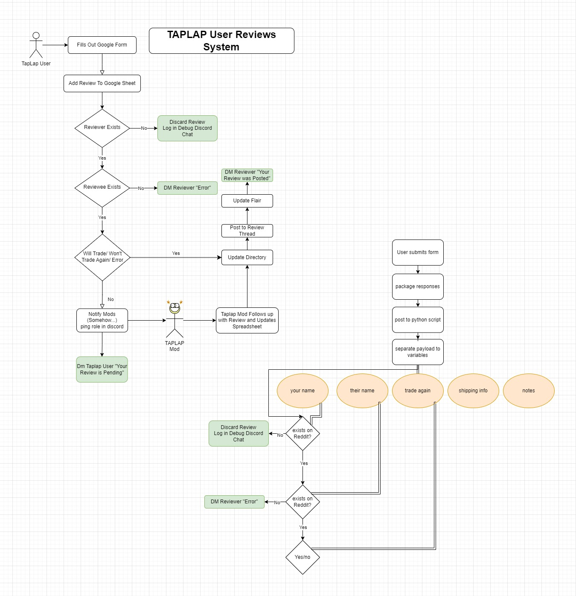
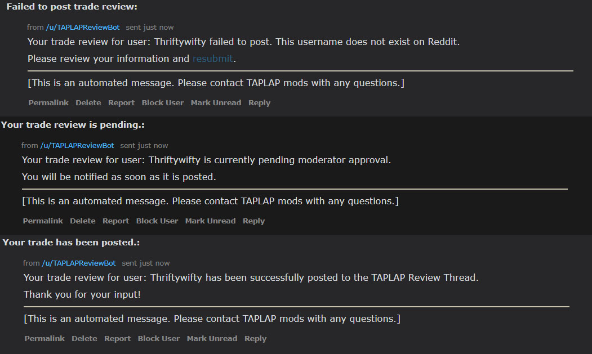

Timeline: April 2023-May 2023
Take a Plant Leave a Plant is a vibrant and growing houseplant enthusiast community housed on Reddit and Discord. Members of the subreddit can buy, trade and sell plants with other members, while the Discord server is a more robust and varied social ground. Due to increased growth, the moderators struggled to meet the growing demand to document and oversee the review system.
TaPLaP Review Bot is a cross-platform tool that streamlines the moderating process for trade and sale reviews within the community.
I worked remotely with the moderators and another volunteer coder to develop a system to automate the review process. Users submit their reviews using Google Forms. On a successful review, the Python script will send a confirmation message to the poster,  add the review to the community directory, and update the reviewed user's community info. On a failed or flagged review, the bot will alert the appropriate party of the issue, either through Reddit or Discord. Following preliminary bug testing, the bot went live in May 2023.
All code was divided between myself and another community volunteer. We met with a group of TaPLaP moderators to devise the system, then actualized it over the course of a month. The coding I was responsible for spans multiple platforms and languages, including Google Forms and Sheets API (a propriety form of Javascript), spreadsheets, Python (including the Reddit access library, PRAW), and Discord's API. I also illustrated the subreddit header pictured above in March 2023.
{kind=link}